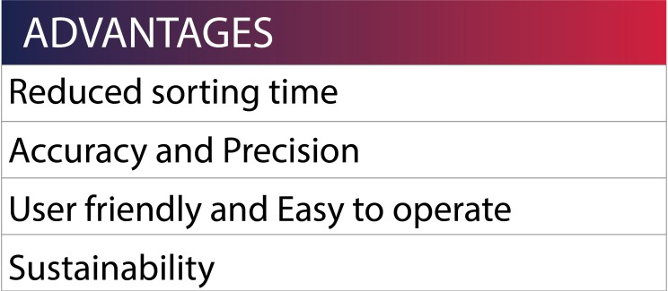
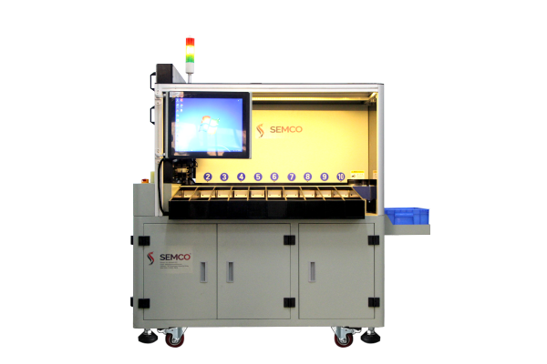
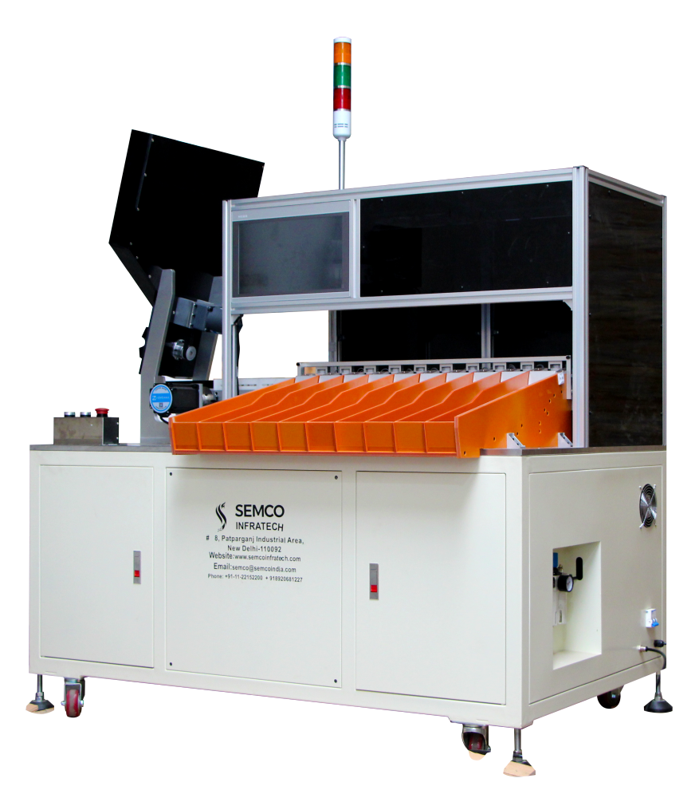
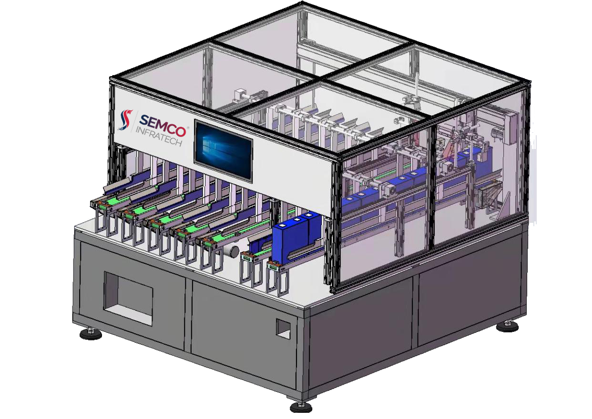

In today's fast-paced world, time is an essential commodity, and industries involved in manufacturing or recycling batteries understand the importance of efficient processes. Sorting and organizing battery cells manually can be a time-consuming and labor-intensive task that can significantly impact productivity. This is where the Battery cell sorting machine comes into play.
But,
Why Cell Sorting Is Required?
The same capacity, voltage, and IR cells should be used to make the modules and packs as it gives maximum efficiency and power. A pack of cells tends to work on the minimum power of the cells in a pack, so we must use the same capacity and value of cells in a pack. It's like the strength of the chain is the weakest link of the chain. If the cells have variable values, they will become unbalanced when the pack is charged and discharged. Few cells will be charged quickly, and few cells will be charged later and may overcharge the few cells, and the same way in discharging.
It increases the risk of cell balancing and results in a lower capacity of the packs and eventually the lower life of the pack.
Now we will be addressing the main uses of the machine along with the parameters that affect the process.
Do you know during the sorting process, the battery cell sorting machine measures the internal resistance and voltage of each cell and categorizes them accordingly? Cells with similar internal resistance and voltage are grouped together, while those that deviate from the norm are eliminated. This helps manufacturers to identify and eliminate any cells that may not meet their quality standards, ensuring that the batteries they produce are of high quality and reliable.

One of the key benefits of the Battery cell sorting machine is its ability to reduce sorting time significantly. The high-speed sorting capabilities of the machine enable the sorting of battery cells in a fraction of the time it would take to sort them manually. This frees up valuable time and resources for other important tasks, such as manufacturing and quality control, making the plant more productive and efficient.
Moreover, the Battery cell sorting machine is equipped with state-of-the-art technology that ensures accuracy and precision in cell sorting. The machine sorts cells based on various parameters such as size, shape, voltage, and capacity, allowing for a tailored approach to battery sorting. This customized approach ensures that cells are organized in a way that maximizes their performance and longevity, resulting in better-quality batteries.
In addition, the Battery cell sorting machine is designed to be user-friendly and easy to operate. The sorting parameters can be easily customized, ensuring that the cells are sorted in a way that maximizes their performance and longevity. This ease of use makes the machine accessible to all employees, regardless of their technical proficiency.
Another advantage of the Battery cell sorting machine is its sustainability. By efficiently sorting and organizing battery cells, the machine ensures that they are utilized to their fullest potential and can be recycled or reused when their lifespan comes to an end. This promotes environmental responsibility, reduces waste, and ensures that the battery assembly plant is sustainable.
Overall, the Battery cell sorting machine is a must-have for any battery assembly plant looking to increase efficiency and productivity while promoting environmental responsibility. Investing in this machine saves time, reduces waste, and improves the quality of batteries, making it a valuable investment in the long run.
Amid these perfect solutions, we have the exact equipment to fit your needs and it is.
Semco Cell Sorting Machine
Semco is a leading manufacturer of sorting machines used in the battery industry. Their range of machines includes the SEMCO Multi-Function Cell Sorting Machine, Semco Automatic Sorting Machine, and Semco Prismatic Cell Sorting Machine. These cell sorting machines are equipped with the highest quality IR Tester from Hioki Japan. The different models of the machine can be also used depending on the accuracy levels required.
Talking about these fully automated and advanced machines here are the features and capabilities of each machine.
SEMCO Multi-Function Cell Sorting Machine
The SEMCO Multi-Function Cell Sorting Machine is a versatile machine that can sort various types of batteries, including cylindrical cells. The machine is equipped with a PLC that controls the speed-regulating motor and cylinder to complete the sorting function. Semco customizes the machine according to the needs of the customers available on 5/10/20 CH.

Semco Automatic Sorting Machine
The Semco Automatic Sorting Machine is designed for sorting cylindrical batteries and can be customized in 5/10/20 CH depending upon the requirements. The automatic sorting test system with high precision IR and voltage ensures accurate sorting of batteries. The machine is equipped with a cell overloading alarm system and sound and light alarm for added safety. In addition, the Machines come with an integrated automatic sticker machine hence saving labor costs.

Semco Prismatic Cell Sorting Machine
The Semco Prismatic Cell Sorting Machine is designed for sorting prismatic cells and is customizable with 5/8/10CH. The automatic sorting test system with high precision IR and voltage ensures accurate sorting of batteries. The machine is equipped with a cell overloading alarm system and sound and light alarm for added safety. It also has a database management mode that allows for long-term preservation and strong traceability of the sorted batteries. The machine has a high degree of automation, and simple operation, and can sort up to 600 batteries per hour.

Semco's range of sorting machines offers a high degree of automation, simple operation, and accurate sorting of various types of batteries. The machines are equipped with advanced features such as automatic sorting test systems, cell overloading alarms, and sound and light alarms for added safety. With their high precision and traceability, these machines are essential for battery manufacturers looking to optimize their production processes.
Find the video to have more insight into the working of cell sorting machines.
If you liked our newsletter do share and comment. If the battery industry inspires you then do follow us for exciting updates and news. Soon we will be up with a newsletter on the Spot welding machines. Till then “happy batteries”.
About Semco - Established in 2006, Semco Infratech has secured itself as the number 1 lithium-ion battery assembling and testing solutions provider in the country. Settled in New Delhi, Semco gives turnkey solutions for lithium-ion battery assembling and precision testing with an emphasis on Research and development to foster imaginative, future-proof products for end users.